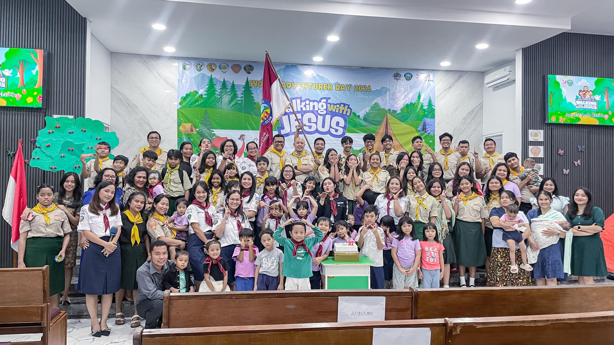
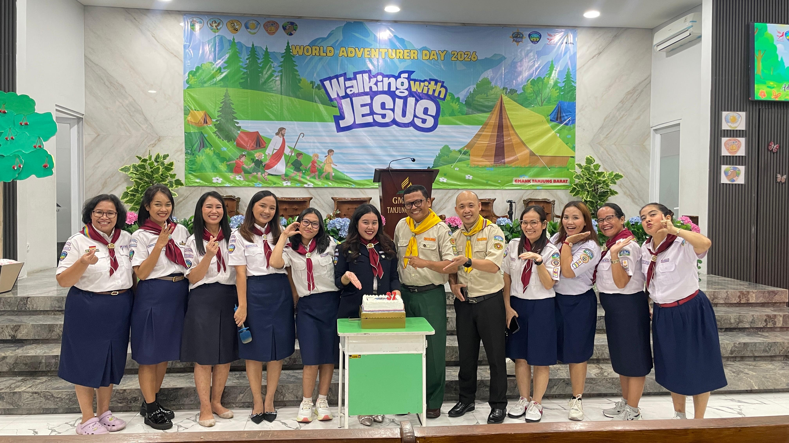

"Dan segala sesuatu yang kamu lakukan dengan perkataan atau perbuatan, lakukanlah semuanya itu dalam nama Tuhan Yesus."
Kolose 3:17
Foto Kegiatan
Momen Pelayanan Jemaat



"Dan segala sesuatu yang kamu lakukan dengan perkataan atau perbuatan, lakukanlah semuanya itu dalam nama Tuhan Yesus."
Kolose 3:17Ruang dokumentasi dan informasi kegiatan GMAHK Tanjung Barat untuk menguatkan persekutuan, pelayanan, dan kasih di tengah jemaat.


Persekutuan utama jemaat untuk belajar firman, berdoa, dan menyembah Tuhan bersama.
Mengakhiri minggu dengan hati yang tenang melalui doa, pujian, dan renungan firman.
Ruang bagi orang muda untuk bertumbuh, melayani, dan membangun persahabatan rohani.